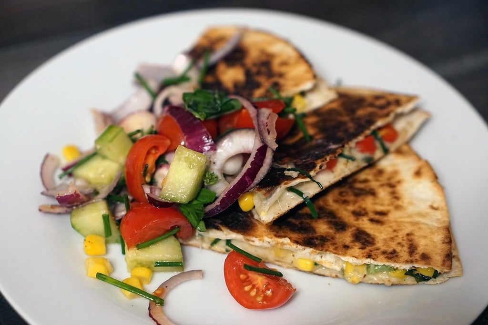

Black Bean Quesadillas

15 minute, 4 serving recipe for a busy night.
Don't have a credit for this recipe, its been written on a scrap of paper in the cupboard for a couple decades and is great for a quick meal
Ingredients
- 1 each 15 ounce can of black beans, rinsed
- 1/2 cup shredded Monterey Jack Cheese, preferably pepper jack
- 1/2 cup prepared fresh salsa, divided
- 4 each 8-inch tortillas
- 2 teaspoons canola oil, divided
- 1 ripe avocado, diced
Instructions
- Combine beans, cheese, and 1/4 cup salsa in a medium bowl.
- Place tortillas on a flat work surface. Spread 1/2 cup filling on half of each tortilla. Fold tortillas in half, pressing gently to flatten.
- Heat 1 teaspoon oil in a large skillet over medium heat. Add 2 Quesadillas and cook, turning once, until golden on both sides, 2 to 4 minutes total.
- Transfer to a cutting board and tent with foil to keep warm. Repeat with the remaining 1 teaspoon oil and Quesadillas.
- Serve the Quesadillas with avocado and the remaining salsa.